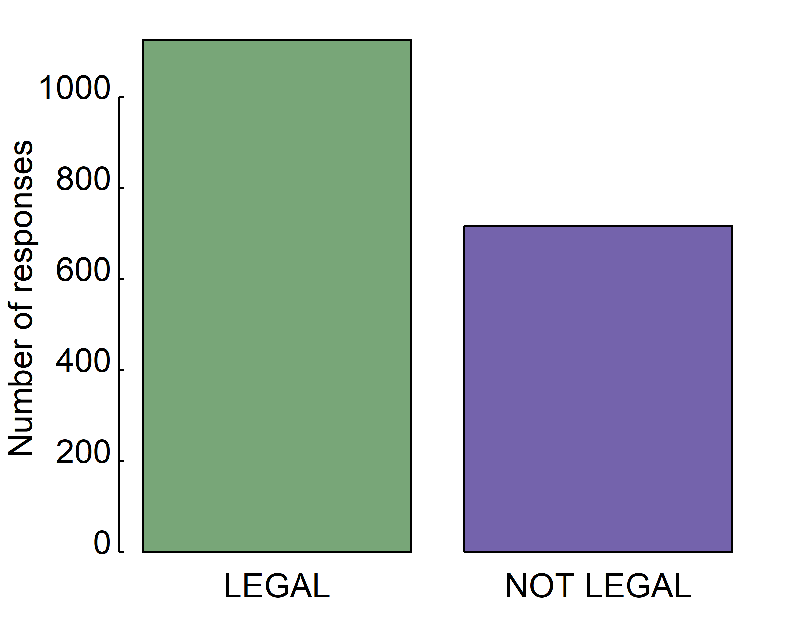
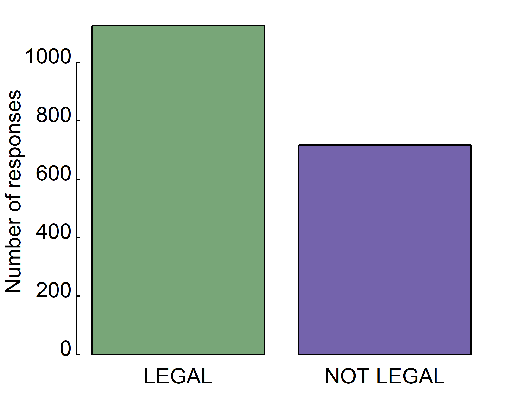
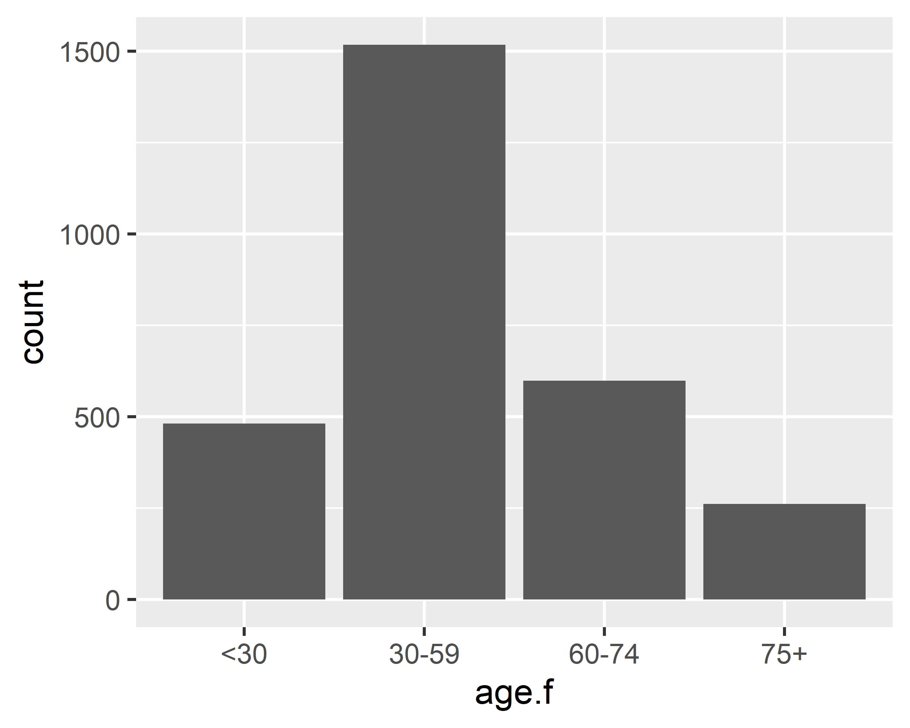

3 Getting started with a data analysis
3.1 Terminology
Before we begin data management tasks, we need a few vocabulary terms would be useful to discuss. Data scientists were usually interested in the characteristics and behaviors of humans and organizations. To understand these things, scientists often measured and recorded information about people or organizations.
Dataset 1 - Marijuana legalization
For example, a data scientist working on social science might be interested in understanding whether age is related to votes for marijuana legalization. To get this information, in several years, including 2016, the GSS survey included a question asking the survey participants whether they support marijuana legalization.
The GSS question was worded as follows:
- Do you think the use of marijuana should be legal or not?
Below the question, the different response options were listed:
- legal,
- not legal,
- don’t know (
DK), - no answer (
NA), - not applicable (
IAP).
The GSS Data Explorer (https://gssdataexplorer.norc.org) allows people to create a free account and browse the data that have been collected in the surveys. We used the Data Explorer to select the marijuana legalization question and a question about age. The age is important, since marijuana legalization had been primarily up to voters so far, the success of ballot initiatives in the future will depend on the support of people of voting age. If younger people are more supportive, this suggests that over time, the electorate will become more supportive as the old electorate decreases.
We saved age and vote data from the GSS and made the data file with the
file name legal_weed_age_GSS2016_ch1.csv. You can see the first 6 rows
from this data file:
| grass | age |
|---|---|
| IAP | 47 |
| LEGAL | 61 |
| NOT LEGAL | 72 |
| IAP | 43 |
| LEGAL | 55 |
| LEGAL | 53 |
As you can see, each person is an observation, and there are two variables, voting behavior (grass) and age. In a typical dataset, observations are the rows and variables are the columns.
Example 2 - Student survey
Another example a data frame contains the responses of 237 Statistics I. students at the University of Adelaide to a number of questions. It contains a lot of variables:
Sex- The sex of the student. (Factor with levels “Male” and “Female.”)Wr.Hnd- span (distance from tip of thumb to tip of little finger of spread hand) of writing hand, in centimetres.NW.Hnd- span of non-writing hand.W.Hnd- writing hand of student. (Factor, with levels “Left” and “Right.”)Fold- “Fold your arms! Which is on top” (Factor, with levels “R on L,” “L on R,” “Neither.”)Pulse- pulse rate of student (beats per minute).Clap- ‘Clap your hands! Which hand is on top?’ (Factor, with levels “Right,” “Left,” “Neither.”)Exer- how often the student exercises. (Factor, with levels “Freq” (frequently), “Some,” “None.”)Smoke- how much the student smokes. (Factor, levels “Heavy,” “Regul” (regularly), “Occas” (occasionally), “Never.”)Height- height of the student in centimetres.M.I- whether the student expressed height in imperial (feet/inches) or metric (centimetres/metres) units. (Factor, levels “Metric,” “Imperial.”)Age- age of the student in years.
| Sex | Wr.Hnd | NW.Hnd | W.Hnd | Fold | Pulse | Clap | Exer | Smoke | Height | M.I | Age |
|---|---|---|---|---|---|---|---|---|---|---|---|
| Female | 18.5 | 18.0 | Right | R on L | 92 | Left | Some | Never | 173.00 | Metric | 18.250 |
| Male | 19.5 | 20.5 | Left | R on L | 104 | Left | None | Regul | 177.80 | Imperial | 17.583 |
| Male | 18.0 | 13.3 | Right | L on R | 87 | Neither | None | Occas | NA | NA | 16.917 |
| Male | 18.8 | 18.9 | Right | R on L | NA | Neither | None | Never | 160.00 | Metric | 20.333 |
| Male | 20.0 | 20.0 | Right | Neither | 35 | Right | Some | Never | 165.00 | Metric | 23.667 |
| Female | 18.0 | 17.7 | Right | L on R | 64 | Right | Some | Never | 172.72 | Imperial | 21.000 |
In statistics data are organized in what we call a data matrix or dataset, where each row represents an observation or a case and each column represents a variable. If you ever use spreadsheets, for example an Excel spreadsheet, this representation should be familiar to you as well. There are two types of variables, numerical and categorical. Numerical, in other words, quantitative variables, take on numerical values. It is sensible to add, subtract, take averages, etc., with these values. Categorical, or qualitative variables, take on a limited number of distinct categories. These categories can be identified with numbers or labels, but it wouldn’t be sensible to do arithmetic operations with these values.
Numerical variables can further be categorized as continuous or discrete. Continuous numerical variables are usually measured, such as height, and they can take on any numerical value. While we tend to round our height when we record it, it’s actually measured on a continuous scale.
Discrete numerical variables are generally counted, such as the number of cars a house. These can only be whole, non-negative numbers.
Categorical variables that have ordered levels are called ordinal. Think about a survey question where you’re asked how satisfied you are with the customer service you received, and the options are “very unsatisfied,” “unsatisfied,” “neutral,” “satisfied,” or “very satisfied.” These levels have an inherent ordering, and hence the variable would be called ordinal. If the levels of a categorical variable do not have an inherent ordering to them, then the variable is simply called nominal.
These terms in statistics have a pair in R. Dataset corresponds to data frame. Variable corresponds to columns of data frame. Discrete variables must be an integer or double vector in R. Continuous variables must be an integer or double vector in R, as well. Nominal or ordinal variables must be factor in R.
To sum it up, study the list below.
Terms in statistics - terms in R - example :
Data matrix, dataset - data frame - marijuana legalization dataset and survey dataset
Variable - columns of data frame - each column of two dataset: grass, age, Sex, Wr.Hnd, etc.
numerical / quantitative
- discrete - integer or double vector - Pulse
- continuous - integer or double vector - age, Wr.Hnd, NW.Hnd, Height, Age
categorical / qualitative
- ordinal - factor - Exer, Smoke
- nominal - factor - grass, Sex, W.Hnd, Fold, Clap, M.I
3.2 Read and write data
R has an extensive range of functions to import many types of data files. For example, R can import data from from text files, from Microsoft Excel, from popular statistical packages, and from web sites.
3.2.1 Importing data from a delimited text file
You can import data from delimited text files using read.table(), a function that reads a file in table format and saves it as a data frame. Each row of the table appears as one line in the file. The syntax is
mydataframe <- read.table(file, options)where file is a delimited file and the options are parameters controlling how data is processed. The most common options are listed below:
header=- A logical value indicating whether the file contains the variable names in the first line.sep=- The delimiter separating data values. The default issep="", which denotes one or more spaces, tabs, new lines, or carriage returns. Usesep=","to read comma-delimited files,sep="\t"to read tab-delimited files, andsep=";"to read semicolon-delimited filesdec=- The character","or"."used in the file for decimal pointsquote=- Character(s) used to delimit strings that contain special characters. By default this is either double (") or single (') quotes.comment.char=- A character vector of length one containing a single character or an empty string. Use "" to turn off the interpretation of comments altogether.fileEncoding=- Character string for encoding name, e.g."UTF-8","UTF-8-BOM"or"latin2".
Consider a text file named legal_weed_age_GSS2016_ch1.csv containing voters’ response for marijuana legalization question and age. Each line of the file represents a student. The first line contains the variable names, separated with commas. Each subsequent line contains a voter’s information, also separated with commas. The first few lines of the file are as follows:
grass,age
IAP,47
LEGAL,61
NOT LEGAL,72
IAP,43
LEGAL,55
LEGAL,53
IAP,50
NOT LEGAL,23The file can be imported into a data frame using the following code:
# read the GSS 2016 data
gss.2016 <- read.table(file = "data/legal_weed_age_GSS2016_ch1.csv",
header = T, sep = ",", fileEncoding = "UTF-8-BOM")The results are as follows:
head(gss.2016) # first 6 rows
#> grass age
#> 1 IAP 47
#> 2 LEGAL 61
#> 3 NOT LEGAL 72
#> 4 IAP 43
#> 5 LEGAL 55
#> 6 LEGAL 53
str(gss.2016)
#> 'data.frame': 2867 obs. of 2 variables:
#> $ grass: chr "IAP" "LEGAL" "NOT LEGAL" "IAP" ...
#> $ age : chr "47" "61" "72" "43" ...There are several interesting things to note about how the data is imported. By default, read.table() do not convert character variables to factors. You can suppress this behaviour in a number of ways. Including the option stringsAsFactors=TRUE turns off this behaviour for all character variables. The variable age is a character vector, which is not desirable. Age is a continuous variable, so it must be a numeric in R. We will discuss this issue in detail later.
3.2.2 Importing data from Excel
The best way to read an Excel file is to import Excel worksheets directly using the rio package. Be sure to download and install it before you first use it. Alternatively, export it to a comma-delimited file from Excel and import it into R using the method described earlier.
The rio package can be used to read, write, many file formats. The import() function imports a worksheet into a data frame. The simplest format is
import(file)where file= is the path to an Excel workbook.
Let’s import the student survey: imports the first worksheet from the workbook survey.xlsx stored on project data directory and saves it as the data frame survey.
library(rio)
survey <- import(file = "data/survey.xlsx")The results are as follows:
head(survey) # first 6 rows
#> Sex Wr.Hnd NW.Hnd W.Hnd Fold Pulse Clap Exer Smoke
#> 1 Female 18.5 18.0 Right R on L 92 Left Some Never
#> 2 Male 19.5 20.5 Left R on L 104 Left None Regul
#> 3 Male 18.0 13.3 Right L on R 87 Neither None Occas
#> 4 Male 18.8 18.9 Right R on L NA Neither None Never
#> 5 Male 20.0 20.0 Right Neither 35 Right Some Never
#> 6 Female 18.0 17.7 Right L on R 64 Right Some Never
#> Height M.I Age
#> 1 173.00 Metric 18.250
#> 2 177.80 Imperial 17.583
#> 3 NA <NA> 16.917
#> 4 160.00 Metric 20.333
#> 5 165.00 Metric 23.667
#> 6 172.72 Imperial 21.000
str(survey)
#> 'data.frame': 237 obs. of 12 variables:
#> $ Sex : chr "Female" "Male" "Male" "Male" ...
#> $ Wr.Hnd: num 18.5 19.5 18 18.8 20 18 17.7 17 20 18.5 ...
#> $ NW.Hnd: num 18 20.5 13.3 18.9 20 17.7 17.7 17.3 19.5 18.5 ...
#> $ W.Hnd : chr "Right" "Left" "Right" "Right" ...
#> $ Fold : chr "R on L" "R on L" "L on R" "R on L" ...
#> $ Pulse : num 92 104 87 NA 35 64 83 74 72 90 ...
#> $ Clap : chr "Left" "Left" "Neither" "Neither" ...
#> $ Exer : chr "Some" "None" "None" "None" ...
#> $ Smoke : chr "Never" "Regul" "Occas" "Never" ...
#> $ Height: num 173 178 NA 160 165 ...
#> $ M.I : chr "Metric" "Imperial" NA "Metric" ...
#> $ Age : num 18.2 17.6 16.9 20.3 23.7 ...As you can see, the variable Sex, W.Hnd, etc. are a character vectors, which is not desirable. They are a categorical variables, so they must be factors in R.
3.2.3 Exporting data from R
So far, we reviewed a wide range of methods for importing data into R. But sometimes you’ll want to go the other way - exporting data from R - so that data can be archived or imported into external applications. Now, you’ll learn how to output an R object to a delimited text file, an Excel spreadsheet, or a statistical application (such as SPSS, SAS, or Stata).
You can use the write.table() function to output an R object to a delimited text file. The format is
write.table(x, outfile, sep=delimiter, quote=TRUE, na="NA")where x is the object and outfile is the target file. For example, the statement
write.table(x = survey, file = "output/data/survey.txt", sep = "\t",
dec = ",", row.names = FALSE, quote = FALSE)saves the dataset survey to a tab-delimited file named survey.txt in the project output/data directory. Replacing sep="\t" with sep=";" saves the data in a semicolon-delimited file. By default, strings are enclosed in quotes ("") and missing values are written as NA. We will not print row names (row.names = FALSE) and quote (quote = FALSE) in the output text file.
The export() function in the rio package can be used to save an R data frame to an Excel workbook. For example, the statements
library(rio)
export(x = gss.2016, file = "output/data/gss.xlsx")export the data frame gss.2016 to a worksheet (Sheet 1 by default) in an Excel workbook named gss.xlsx in the project output/data directory. By default, the variable names in the dataset are used to create column headings in the spreadsheet, and row names are placed in the first column of the spreadsheet. If gss.xlsx already exists, it’s overwritten.
The export() function in the rio package can be used to export a data frame to an external statistical application. For example, the code
library(rio)
export(x = survey, file = "output/data/survey.sav")exports the data frame survey into an SPSS data file named survey.sav.
Please study carefully the following codes and outputs:
# Export (tab or semicolon) delimited text files with and withot encoding
write.table(x = survey, file = "output/data/survey.txt", sep = "\t",
dec = ",", row.names = FALSE, quote = FALSE)
write.table(x = survey, file = "output/data/survey.csv", sep = ";",
dec = ",", row.names = FALSE, quote = FALSE)
write.table(x = survey, file = "output/data/survey_utf-8.txt", sep = "\t",
dec = ",", row.names = FALSE, quote = FALSE, fileEncoding = "UTF-8")
write.table(x = survey, file = "output/data/survey_latin2.txt", sep = "\t",
dec = ",", row.names = FALSE, quote = FALSE, fileEncoding = "latin2")
write.table(x = survey, file = "output/data/survey_utf-8.csv", sep = ";",
dec = ",", row.names = FALSE, quote = FALSE, fileEncoding = "UTF-8")
write.table(x = survey, file = "output/data/survey_latin2.csv", sep = ";",
dec = ",", row.names = FALSE, quote = FALSE, fileEncoding = "latin2")
# Export Excel and SPSS files
library(rio)
export(x = survey, file = "output/data/survey.xlsx")
export(x = survey, file = "output/data/survey.sav")
export(x = gss.2016, file = "output/data/gss.xlsx")
export(x = gss.2016, file = "output/data/gss.sav")3.3 Data manipulation
In the previous chapter, we covered a variety of methods for importing data into R. Unfortunately, getting your data in the rectangular arrangement of a matrix or data frame is only the first step in preparing it for analysis. In this early stage we try to get as much information as we can.
3.3.1 Get information
When working with (large) data frames, you must first develop a clear understanding of the structure and main elements of the data set. Therefore, it can often be useful to show only a small part of the entire data set. To do this in R, you can use the functions head() or tail(). The head() function shows the first part of the data frame. The tail() function shows the last part. Both functions print a top line called the header which contains the names of the different variables in the data set.
head(gss.2016)
#> grass age
#> 1 IAP 47
#> 2 LEGAL 61
#> 3 NOT LEGAL 72
#> 4 IAP 43
#> 5 LEGAL 55
#> 6 LEGAL 53
tail(gss.2016, n = 3)
#> grass age
#> 2865 LEGAL 87
#> 2866 IAP 55
#> 2867 NOT LEGAL 72Another method to get a rapid overview of the data is the str() function. The str() function shows the structure of the data set.
str(gss.2016)
#> 'data.frame': 2867 obs. of 2 variables:
#> $ grass: chr "IAP" "LEGAL" "NOT LEGAL" "IAP" ...
#> $ age : chr "47" "61" "72" "43" ...For a data frame it gives the following information:
- The total number of observations (e.g. 2867 voters)
- The total number of variables (e.g. 2 variables)
- A full list of the variables names (
grass,age) - The data type of each variable (
chr) - The first observations
When you receive a new data frame, applying the str() function is often the first step. It is a great way to get more insight into the data set before deeper analysis.
Please study carefully the following codes and outputs:
str(gss.2016) # Structure of an Arbitrary R Object
#> 'data.frame': 2867 obs. of 2 variables:
#> $ grass: chr "IAP" "LEGAL" "NOT LEGAL" "IAP" ...
#> $ age : chr "47" "61" "72" "43" ...
head(gss.2016) # Return the First Parts of an Object
#> grass age
#> 1 IAP 47
#> 2 LEGAL 61
#> 3 NOT LEGAL 72
#> 4 IAP 43
#> 5 LEGAL 55
#> 6 LEGAL 53
dim(gss.2016) # Dimensions of an Object
#> [1] 2867 2
ncol(gss.2016) # The Number of Rows of a data frame
#> [1] 2
nrow(gss.2016) # The Number of Columns of a data frame
#> [1] 2867
names(gss.2016) # The Column Names of an Object
#> [1] "grass" "age"
typeof(gss.2016) # Type of an Object
#> [1] "list"
class(gss.2016) # Class of an Object
#> [1] "data.frame"
str(survey)
#> 'data.frame': 237 obs. of 12 variables:
#> $ Sex : chr "Female" "Male" "Male" "Male" ...
#> $ Wr.Hnd: num 18.5 19.5 18 18.8 20 18 17.7 17 20 18.5 ...
#> $ NW.Hnd: num 18 20.5 13.3 18.9 20 17.7 17.7 17.3 19.5 18.5 ...
#> $ W.Hnd : chr "Right" "Left" "Right" "Right" ...
#> $ Fold : chr "R on L" "R on L" "L on R" "R on L" ...
#> $ Pulse : num 92 104 87 NA 35 64 83 74 72 90 ...
#> $ Clap : chr "Left" "Left" "Neither" "Neither" ...
#> $ Exer : chr "Some" "None" "None" "None" ...
#> $ Smoke : chr "Never" "Regul" "Occas" "Never" ...
#> $ Height: num 173 178 NA 160 165 ...
#> $ M.I : chr "Metric" "Imperial" NA "Metric" ...
#> $ Age : num 18.2 17.6 16.9 20.3 23.7 ...
head(survey)
#> Sex Wr.Hnd NW.Hnd W.Hnd Fold Pulse Clap Exer Smoke
#> 1 Female 18.5 18.0 Right R on L 92 Left Some Never
#> 2 Male 19.5 20.5 Left R on L 104 Left None Regul
#> 3 Male 18.0 13.3 Right L on R 87 Neither None Occas
#> 4 Male 18.8 18.9 Right R on L NA Neither None Never
#> 5 Male 20.0 20.0 Right Neither 35 Right Some Never
#> 6 Female 18.0 17.7 Right L on R 64 Right Some Never
#> Height M.I Age
#> 1 173.00 Metric 18.250
#> 2 177.80 Imperial 17.583
#> 3 NA <NA> 16.917
#> 4 160.00 Metric 20.333
#> 5 165.00 Metric 23.667
#> 6 172.72 Imperial 21.000
dim(survey)
#> [1] 237 12
ncol(survey)
#> [1] 12
nrow(survey)
#> [1] 237
names(survey)
#> [1] "Sex" "Wr.Hnd" "NW.Hnd" "W.Hnd" "Fold" "Pulse"
#> [7] "Clap" "Exer" "Smoke" "Height" "M.I" "Age"
typeof(survey)
#> [1] "list"
class(survey)
#> [1] "data.frame"3.3.2 Data type conversions
As you have known, in R, you use numeric vectors to represent quantitative variables, and you use factors to represent categorical variables. In the data frame gss.2016, the variable grass is character vector, but it should be a factor. R provides a set of functions to identify an object’s data type and convert it to a different data type. You can use the function factor() to convert from character or numeric to factor.
str(gss.2016) # grass is character
#> 'data.frame': 2867 obs. of 2 variables:
#> $ grass: chr "IAP" "LEGAL" "NOT LEGAL" "IAP" ...
#> $ age : chr "47" "61" "72" "43" ...
gss.2016$grass <- factor(gss.2016$grass) # convert
str(gss.2016) # grass is factor
#> 'data.frame': 2867 obs. of 2 variables:
#> $ grass: Factor w/ 4 levels "DK","IAP","LEGAL",..: 2 3 4 2 3 3 2 4 2 4 ...
#> $ age : chr "47" "61" "72" "43" ...The continuous variable age is also character, but it should be a numeric. What is the problem with age variable? Use the unique() and table() functions.
unique(gss.2016$age)
#> [1] "47" "61" "72" "43"
#> [5] "55" "53" "50" "23"
#> [9] "45" "71" "33" "86"
#> [13] "32" "60" "76" "56"
#> [17] "62" "31" "58" "37"
#> [21] "25" "22" "74" "75"
#> [25] "68" "46" "35" "59"
#> [29] "79" "40" "44" "36"
#> [33] "70" "28" "20" "41"
#> [37] "42" "57" "26" "51"
#> [41] "39" "27" "30" "29"
#> [45] "80" "49" "78" "52"
#> [49] "66" "89 OR OLDER" "54" "48"
#> [53] "81" "69" "21" "64"
#> [57] "38" "65" "67" "84"
#> [61] "34" "77" "19" NA
#> [65] "83" "73" "63" "24"
#> [69] "82" "85" "87" "18"
#> [73] "88"
table(gss.2016$age, useNA = "ifany")
#>
#> 18 19 20 21 22
#> 7 33 26 33 44
#> 23 24 25 26 27
#> 49 35 56 42 58
#> 28 29 30 31 32
#> 42 56 54 57 42
#> 33 34 35 36 37
#> 54 49 56 52 58
#> 38 39 40 41 42
#> 44 42 46 36 50
#> 43 44 45 46 47
#> 45 52 27 45 55
#> 48 49 50 51 52
#> 46 41 48 49 65
#> 53 54 55 56 57
#> 60 53 48 48 70
#> 58 59 60 61 62
#> 67 58 53 56 56
#> 63 64 65 66 67
#> 43 34 44 47 49
#> 68 69 70 71 72
#> 43 42 32 27 26
#> 73 74 75 76 77
#> 22 24 19 25 23
#> 78 79 80 81 82
#> 26 21 25 21 11
#> 83 84 85 86 87
#> 22 11 11 12 9
#> 88 89 OR OLDER <NA>
#> 3 22 10unique(x) returns an object of the same type of x, but with only one copy of each duplicated element. table(x) returns the same, plus the number of times a particular value of x occurs.
Age appears to be measured in years up to age 88, and then "89 OR OLDER" represents people who are 89 years old or older. Since "89 OR OLDER" can not be a number, trying to force the age variable with "89 OR OLDER" in it into a numeric variable would result in an error. Before converting age into a numeric variable, you should first recode anyone who has a value of "89 OR OLDER" to instead have a value 89.
gss.2016$age[gss.2016$age %in% "89 OR OLDER"] <- "89" # recoding
gss.2016$age <- as.numeric(gss.2016$age) # data type conversion
str(gss.2016)
#> 'data.frame': 2867 obs. of 2 variables:
#> $ grass: Factor w/ 4 levels "DK","IAP","LEGAL",..: 2 3 4 2 3 3 2 4 2 4 ...
#> $ age : num 47 61 72 43 55 53 50 23 45 71 ...By now, the data frame gss.2016 is in the desired structure.
What about the data frame survey? As we mentioned, there are a few variables, namely Sex, W.Hnd, Fold, Clap, Exer,Smoke, andM.I, that are categorical, so you need to convert to factor. We can use the factor() function:
survey$Sex <- factor(survey$Sex)
survey$W.Hnd <- factor(survey$W.Hnd)
survey$Fold <- factor(survey$Fold)
survey$Clap <- factor(survey$Clap)
survey$Exer <- factor(survey$Exer)
survey$Smoke <- factor(survey$Smoke)
survey$M.I <- factor(survey$M.I)
str(survey)
#> 'data.frame': 237 obs. of 12 variables:
#> $ Sex : Factor w/ 2 levels "Female","Male": 1 2 2 2 2 1 2 1 2 2 ...
#> $ Wr.Hnd: num 18.5 19.5 18 18.8 20 18 17.7 17 20 18.5 ...
#> $ NW.Hnd: num 18 20.5 13.3 18.9 20 17.7 17.7 17.3 19.5 18.5 ...
#> $ W.Hnd : Factor w/ 2 levels "Left","Right": 2 1 2 2 2 2 2 2 2 2 ...
#> $ Fold : Factor w/ 3 levels "L on R","Neither",..: 3 3 1 3 2 1 1 3 3 3 ...
#> $ Pulse : num 92 104 87 NA 35 64 83 74 72 90 ...
#> $ Clap : Factor w/ 3 levels "Left","Neither",..: 1 1 2 2 3 3 3 3 3 3 ...
#> $ Exer : Factor w/ 3 levels "Freq","None",..: 3 2 2 2 3 3 1 1 3 3 ...
#> $ Smoke : Factor w/ 4 levels "Heavy","Never",..: 2 4 3 2 2 2 2 2 2 2 ...
#> $ Height: num 173 178 NA 160 165 ...
#> $ M.I : Factor w/ 2 levels "Imperial","Metric": 2 1 NA 2 2 1 1 2 2 2 ...
#> $ Age : num 18.2 17.6 16.9 20.3 23.7 ...Our dataset survey contains only numeric and factor variables. But two variables (Exer anSmoke) are ordinal categorical variable, so you need to check the levels.
Sometimes it’s useful to know the number of levels of a factor. The convenience function nlevels() extracts the number of levels from a factor:
nlevels(survey$Exer)
#> [1] 3To look at the levels of a factor, you use the levels() function. For example,
to extract the factor levels of Exer, use the following:
levels(survey$Exer)
#> [1] "Freq" "None" "Some"As you can see, each student has a status of exercise (None, Some, Freq), how often the student exercises. Notice, in the output above the levels are ordered alphabetically. However, we need to sort in the order None, Some, Freq:
survey$Exer <- factor(survey$Exer, levels=c("None", "Some", "Freq"))
levels(survey$Exer)
#> [1] "None" "Some" "Freq"In R, there is a really big practical advantage to order factor’s level. A great many R functions recognize and treat ordered factors differently by printing results in the order that you expect. For example,
table(survey$Exer, useNA = "ifany")
#>
#> None Some Freq
#> 24 98 115We need to order the levels in Smoke variable.
levels(survey$Smoke)
#> [1] "Heavy" "Never" "Occas" "Regul"
table(survey$Smoke, useNA = "ifany")
#>
#> Heavy Never Occas Regul <NA>
#> 11 189 19 17 1
survey$Smoke <- factor(survey$Smoke, levels=c("Never", "Occas", "Regul","Heavy"))
levels(survey$Smoke)
#> [1] "Never" "Occas" "Regul" "Heavy"
table(survey$Smoke, useNA = "ifany")
#>
#> Never Occas Regul Heavy <NA>
#> 189 19 17 11 13.3.3 Transformation
3.3.4 Identifying and treating missing values
In addition to making sure the variables used are an appropriate type, it was also important to make sure that missing values were treated appropriately by R. In R, missing values are recorded as NA, which stands for not available. Researchers code missing values in many different ways when collecting and storing data. Some of the more common ways to denote missing values are the following:
- blank
- 777, -777, 888, -888, 999, -999, or something similar
- a single period
- -1
- NULL.
Other responses, such as “Don’t know” or “Inapplicable,” may sometimes be treated as missing or as response categories depending on what is most appropriate given the characteristics of the data and the analysis goals.
In the summary of the gss.2016 data,
summary(gss.2016)
#> grass age
#> DK : 110 Min. :18.00
#> IAP : 911 1st Qu.:34.00
#> LEGAL :1126 Median :49.00
#> NOT LEGAL: 717 Mean :49.16
#> NA's : 3 3rd Qu.:62.00
#> Max. :89.00
#> NA's :10the grass variable has five possible values: DK (don’t know), IAP (inapplicable), LEGAL, NOT LEGAL, and NA (not available). The DK, IAP, and NA could all be considered missing values. However, R treats only NA as missing. Before conducting any analyses, the DK and IAP values could be converted to NA to be treated as missing in any analyses. That is, the grass variable could be recoded so that these values are all NA. Note that NA is a reserved “word” in R. In order to use NA, both letters must be uppercase (Na or na does not work), and there can be no quotation marks (R will treat "NA" as a character rather than a true missing value). There are many ways to recode variables in R. For example,
table(gss.2016$grass, useNA = "ifany") # before recoding
#>
#> DK IAP LEGAL NOT LEGAL <NA>
#> 110 911 1126 717 3
library(car)
gss.2016$grass <- car::recode(var = gss.2016$grass, recodes = 'c("DK", "IAP")=NA')
table(gss.2016$grass, useNA = "ifany") # after recoding
#>
#> LEGAL NOT LEGAL <NA>
#> 1126 717 10243.3.5 Numeric to factor
In addition to solving the age and grass recoding, the final plan to create the age categories shown below. The age variable currently holds the age in years rather than age categories. The age can be in four categories:
- 18-29
- 30-59
- 60-74
- 75+
The function cut() can be used to divide a continuous variable into categories by cutting it into pieces and adding a label to each piece.
gss.2016$age.f <- cut(x = gss.2016$age, breaks = c(-Inf, 29, 59, 74, Inf),
labels = c("<30", "30-59", "60-74", "75+" ))
table(gss.2016$age.f, useNA = "ifany")
#>
#> <30 30-59 60-74 75+ <NA>
#> 481 1517 598 261 10cut() takes a variable like age as the first argument. The second thing to add after the variable name is a vector made up of the breaks. Breaks specify the lower and upper limit of each category of values. The first entry is the lowest value of the first category, the second entry is the highest value of the first category, the third entry is the highest value of the second category, and so on. The first and last values in the vector are -Inf and Inf. These are negative infinity and positive infinity. This was for convenience rather than looking up the smallest and largest values of variable age. It also makes the code more flexible in case there is a new data point with a smaller or larger value. The final thing to add is a vector made up of the labels for the categories, with each label inside quote marks.
3.4 Descriptive statistics
R has built in functions for a large number of summary statistics. To illustrate the main R functions we will use the survey and gss.2016 datasets. R has tons of packages to explore our dataset, but we focus on built-in possibilities, psych and DescTools packages.
Let us first see what kind of objects are included in survey and gss.2016 by using summary() function.
summary(gss.2016)
#> grass age age.f
#> LEGAL :1126 Min. :18.00 <30 : 481
#> NOT LEGAL: 717 1st Qu.:34.00 30-59:1517
#> NA's :1024 Median :49.00 60-74: 598
#> Mean :49.16 75+ : 261
#> 3rd Qu.:62.00 NA's : 10
#> Max. :89.00
#> NA's :10
summary(survey)
#> Sex Wr.Hnd NW.Hnd W.Hnd
#> Female:118 Min. :13.00 Min. :12.50 Left : 18
#> Male :118 1st Qu.:17.50 1st Qu.:17.50 Right:218
#> NA's : 1 Median :18.50 Median :18.50 NA's : 1
#> Mean :18.67 Mean :18.58
#> 3rd Qu.:19.80 3rd Qu.:19.73
#> Max. :23.20 Max. :23.50
#> NA's :1 NA's :1
#> Fold Pulse Clap Exer
#> L on R : 99 Min. : 35.00 Left : 39 None: 24
#> Neither: 18 1st Qu.: 66.00 Neither: 50 Some: 98
#> R on L :120 Median : 72.50 Right :147 Freq:115
#> Mean : 74.15 NA's : 1
#> 3rd Qu.: 80.00
#> Max. :104.00
#> NA's :45
#> Smoke Height M.I Age
#> Never:189 Min. :150.0 Imperial: 68 Min. :16.75
#> Occas: 19 1st Qu.:165.0 Metric :141 1st Qu.:17.67
#> Regul: 17 Median :171.0 NA's : 28 Median :18.58
#> Heavy: 11 Mean :172.4 Mean :20.37
#> NA's : 1 3rd Qu.:180.0 3rd Qu.:20.17
#> Max. :200.0 Max. :73.00
#> NA's :28The type of the descriptive statistics we use depends on whether data is numeric (continuous) or categorical and so we will look at each case separately next.
3.4.1 Measurements
Recall that for numeric variables, we are usually interested in measuring center tendency and spread to get a sense of data. Suppose that we are interested in Height column, in which students’ height is measured. From the summary(survey) table above we know that this variable is indeed a numeric data, and therefore we can measure central tendency and spread of this variable as we do in the following codes, respectively:
# Central Tendency
mean(survey$Height, na.rm = T) # Mean
#> [1] 172.3809
median(survey$Height, na.rm = T) # Median
#> [1] 171
# Spread
min(survey$Height, na.rm = T) # Minimum
#> [1] 150
max(survey$Height, na.rm = T) # Maximum
#> [1] 200
range(survey$Height, na.rm = T) # Range
#> [1] 150 200
IQR(survey$Height, na.rm = T) # IQR
#> [1] 15
var(survey$Height, na.rm = T) # Variance
#> [1] 96.9738
sd(survey$Height, na.rm = T) # Standard Deviation
#> [1] 9.847528All of these functions have optional arguments to address various complications that your data might have. For example, if your data includes some NAs, then instead of using mean(survey$Height) you should use mean(survey$Height, na.rm = T), which tells R to ignore NAs in the data.
Please study carefully the following codes and outputs:
#install.packages("psych")
library(psych)
describe(gss.2016)
#> vars n mean sd median trimmed mad min max range
#> grass* 1 1843 1.39 0.49 1 1.36 0.00 1 2 1
#> age 2 2857 49.16 17.69 49 48.62 20.76 18 89 71
#> age.f* 3 2857 2.22 0.83 2 2.17 0.00 1 4 3
#> skew kurtosis se
#> grass* 0.45 -1.79 0.01
#> age 0.17 -0.90 0.33
#> age.f* 0.51 -0.16 0.02
describe(survey)
#> vars n mean sd median trimmed mad min max
#> Sex* 1 236 1.50 0.50 1.50 1.50 0.74 1.00 2.0
#> Wr.Hnd 2 236 18.67 1.88 18.50 18.61 1.48 13.00 23.2
#> NW.Hnd 3 236 18.58 1.97 18.50 18.55 1.63 12.50 23.5
#> W.Hnd* 4 236 1.92 0.27 2.00 2.00 0.00 1.00 2.0
#> Fold* 5 237 2.09 0.96 3.00 2.11 0.00 1.00 3.0
#> Pulse 6 192 74.15 11.69 72.50 74.02 11.12 35.00 104.0
#> Clap* 7 236 2.46 0.76 3.00 2.57 0.00 1.00 3.0
#> Exer* 8 237 2.38 0.66 2.00 2.48 1.48 1.00 3.0
#> Smoke* 9 236 1.36 0.81 1.00 1.15 0.00 1.00 4.0
#> Height 10 209 172.38 9.85 171.00 172.19 10.08 150.00 200.0
#> M.I* 11 209 1.67 0.47 2.00 1.72 0.00 1.00 2.0
#> Age 12 237 20.37 6.47 18.58 18.99 1.61 16.75 73.0
#> range skew kurtosis se
#> Sex* 1.00 0.00 -2.01 0.03
#> Wr.Hnd 10.20 0.18 0.30 0.12
#> NW.Hnd 11.00 0.02 0.44 0.13
#> W.Hnd* 1.00 -3.17 8.10 0.02
#> Fold* 2.00 -0.18 -1.89 0.06
#> Pulse 69.00 -0.02 0.33 0.84
#> Clap* 2.00 -0.98 -0.60 0.05
#> Exer* 2.00 -0.61 -0.68 0.04
#> Smoke* 3.00 2.15 3.45 0.05
#> Height 50.00 0.22 -0.44 0.68
#> M.I* 1.00 -0.74 -1.46 0.03
#> Age 56.25 5.16 33.47 0.42
#install.packages("DescTools")
library(DescTools)
Desc(gss.2016, plot=F)
#> ---------------------------------------------------------------
#> Describe gss.2016 (data.frame):
#>
#> data frame: 2867 obs. of 3 variables
#> 1836 complete cases (64.0%)
#>
#> Nr ColName Class NAs Levels
#> 1 grass factor 1024 (35.7%) (2): 1-LEGAL, 2-NOT
#> LEGAL
#> 2 age numeric 10 (0.3%)
#> 3 age.f factor 10 (0.3%) (4): 1-<30, 2-30-59,
#> 3-60-74, 4-75+
#>
#>
#> ---------------------------------------------------------------
#> 1 - grass (factor - dichotomous)
#>
#> length n NAs unique
#> 2'867 1'843 1'024 2
#> 64.3% 35.7%
#>
#> freq perc lci.95 uci.95'
#> LEGAL 1'126 61.1% 58.8% 63.3%
#> NOT LEGAL 717 38.9% 36.7% 41.2%
#>
#> ' 95%-CI (Wilson)
#>
#> ---------------------------------------------------------------
#> 2 - age (numeric)
#>
#> length n NAs unique 0s mean meanCI'
#> 2'867 2'857 10 72 0 49.16 48.51
#> 99.7% 0.3% 0.0% 49.80
#>
#> .05 .10 .25 median .75 .90 .95
#> 22.80 26.00 34.00 49.00 62.00 73.00 80.00
#>
#> range sd vcoef mad IQR skew kurt
#> 71.00 17.69 0.36 20.76 28.00 0.17 -0.90
#>
#> lowest : 18.0 (7), 19.0 (33), 20.0 (26), 21.0 (33), 22.0 (44)
#> highest: 85.0 (11), 86.0 (12), 87.0 (9), 88.0 (3), 89.0 (22)
#>
#> ' 95%-CI (classic)
#>
#> ---------------------------------------------------------------
#> 3 - age.f (factor)
#>
#> length n NAs unique levels dupes
#> 2'867 2'857 10 4 4 y
#> 99.7% 0.3%
#>
#> level freq perc cumfreq cumperc
#> 1 30-59 1'517 53.1% 1'517 53.1%
#> 2 60-74 598 20.9% 2'115 74.0%
#> 3 <30 481 16.8% 2'596 90.9%
#> 4 75+ 261 9.1% 2'857 100.0%
Desc(survey, plot=F)
#> ---------------------------------------------------------------
#> Describe survey (data.frame):
#>
#> data frame: 237 obs. of 12 variables
#> 168 complete cases (70.9%)
#>
#> Nr ColName Class NAs Levels
#> 1 Sex factor 1 (0.4%) (2): 1-Female, 2-Male
#> 2 Wr.Hnd numeric 1 (0.4%)
#> 3 NW.Hnd numeric 1 (0.4%)
#> 4 W.Hnd factor 1 (0.4%) (2): 1-Left, 2-Right
#> 5 Fold factor . (3): 1-L on R,
#> 2-Neither, 3-R on L
#> 6 Pulse numeric 45 (19.0%)
#> 7 Clap factor 1 (0.4%) (3): 1-Left, 2-Neither,
#> 3-Right
#> 8 Exer factor . (3): 1-None, 2-Some,
#> 3-Freq
#> 9 Smoke factor 1 (0.4%) (4): 1-Never, 2-Occas,
#> 3-Regul, 4-Heavy
#> 10 Height numeric 28 (11.8%)
#> 11 M.I factor 28 (11.8%) (2): 1-Imperial,
#> 2-Metric
#> 12 Age numeric .
#>
#>
#> ---------------------------------------------------------------
#> 1 - Sex (factor - dichotomous)
#>
#> length n NAs unique
#> 237 236 1 2
#> 99.6% 0.4%
#>
#> freq perc lci.95 uci.95'
#> Female 118 50.0% 43.7% 56.3%
#> Male 118 50.0% 43.7% 56.3%
#>
#> ' 95%-CI (Wilson)
#>
#> ---------------------------------------------------------------
#> 2 - Wr.Hnd (numeric)
#>
#> length n NAs unique 0s mean meanCI'
#> 237 236 1 60 0 18.67 18.43
#> 99.6% 0.4% 0.0% 18.91
#>
#> .05 .10 .25 median .75 .90 .95
#> 16.00 16.50 17.50 18.50 19.80 21.15 22.05
#>
#> range sd vcoef mad IQR skew kurt
#> 10.20 1.88 0.10 1.48 2.30 0.18 0.30
#>
#> lowest : 13.0 (2), 14.0 (2), 15.0, 15.4, 15.5 (2)
#> highest: 22.5 (4), 22.8, 23.0 (2), 23.1, 23.2 (3)
#>
#> heap(?): remarkable frequency (9.7%) for the mode(s) (= 17.5)
#>
#> ' 95%-CI (classic)
#>
#> ---------------------------------------------------------------
#> 3 - NW.Hnd (numeric)
#>
#> length n NAs unique 0s mean meanCI'
#> 237 236 1 68 0 18.583 18.330
#> 99.6% 0.4% 0.0% 18.835
#>
#> .05 .10 .25 median .75 .90 .95
#> 15.500 16.300 17.500 18.500 19.725 21.000 22.225
#>
#> range sd vcoef mad IQR skew kurt
#> 11.000 1.967 0.106 1.631 2.225 0.024 0.441
#>
#> lowest : 12.5, 13.0 (2), 13.3, 13.5, 15.0
#> highest: 22.7, 23.0, 23.2 (2), 23.3, 23.5
#>
#> heap(?): remarkable frequency (8.9%) for the mode(s) (= 18)
#>
#> ' 95%-CI (classic)
#>
#> ---------------------------------------------------------------
#> 4 - W.Hnd (factor - dichotomous)
#>
#> length n NAs unique
#> 237 236 1 2
#> 99.6% 0.4%
#>
#> freq perc lci.95 uci.95'
#> Left 18 7.6% 4.9% 11.7%
#> Right 218 92.4% 88.3% 95.1%
#>
#> ' 95%-CI (Wilson)
#>
#> ---------------------------------------------------------------
#> 5 - Fold (factor)
#>
#> length n NAs unique levels dupes
#> 237 237 0 3 3 y
#> 100.0% 0.0%
#>
#> level freq perc cumfreq cumperc
#> 1 R on L 120 50.6% 120 50.6%
#> 2 L on R 99 41.8% 219 92.4%
#> 3 Neither 18 7.6% 237 100.0%
#>
#> ---------------------------------------------------------------
#> 6 - Pulse (numeric)
#>
#> length n NAs unique 0s mean meanCI'
#> 237 192 45 43 0 74.15 72.49
#> 81.0% 19.0% 0.0% 75.81
#>
#> .05 .10 .25 median .75 .90 .95
#> 59.55 60.00 66.00 72.50 80.00 90.00 92.00
#>
#> range sd vcoef mad IQR skew kurt
#> 69.00 11.69 0.16 11.12 14.00 -0.02 0.33
#>
#> lowest : 35.0, 40.0, 48.0 (2), 50.0 (2), 54.0
#> highest: 96.0 (3), 97.0, 98.0, 100.0 (2), 104.0 (2)
#>
#> heap(?): remarkable frequency (9.4%) for the mode(s) (= 80)
#>
#> ' 95%-CI (classic)
#>
#> ---------------------------------------------------------------
#> 7 - Clap (factor)
#>
#> length n NAs unique levels dupes
#> 237 236 1 3 3 y
#> 99.6% 0.4%
#>
#> level freq perc cumfreq cumperc
#> 1 Right 147 62.3% 147 62.3%
#> 2 Neither 50 21.2% 197 83.5%
#> 3 Left 39 16.5% 236 100.0%
#>
#> ---------------------------------------------------------------
#> 8 - Exer (factor)
#>
#> length n NAs unique levels dupes
#> 237 237 0 3 3 y
#> 100.0% 0.0%
#>
#> level freq perc cumfreq cumperc
#> 1 Freq 115 48.5% 115 48.5%
#> 2 Some 98 41.4% 213 89.9%
#> 3 None 24 10.1% 237 100.0%
#>
#> ---------------------------------------------------------------
#> 9 - Smoke (factor)
#>
#> length n NAs unique levels dupes
#> 237 236 1 4 4 y
#> 99.6% 0.4%
#>
#> level freq perc cumfreq cumperc
#> 1 Never 189 80.1% 189 80.1%
#> 2 Occas 19 8.1% 208 88.1%
#> 3 Regul 17 7.2% 225 95.3%
#> 4 Heavy 11 4.7% 236 100.0%
#>
#> ---------------------------------------------------------------
#> 10 - Height (numeric)
#>
#> length n NAs unique 0s mean meanCI'
#> 237 209 28 67 0 172.38 171.04
#> 88.2% 11.8% 0.0% 173.72
#>
#> .05 .10 .25 median .75 .90 .95
#> 157.00 160.00 165.00 171.00 180.00 185.42 189.60
#>
#> range sd vcoef mad IQR skew kurt
#> 50.00 9.85 0.06 10.08 15.00 0.22 -0.44
#>
#> lowest : 150.0, 152.0, 152.4, 153.5, 154.94 (2)
#> highest: 191.8, 193.04, 195.0, 196.0, 200.0
#>
#> ' 95%-CI (classic)
#>
#> ---------------------------------------------------------------
#> 11 - M.I (factor - dichotomous)
#>
#> length n NAs unique
#> 237 209 28 2
#> 88.2% 11.8%
#>
#> freq perc lci.95 uci.95'
#> Imperial 68 32.5% 26.5% 39.2%
#> Metric 141 67.5% 60.8% 73.5%
#>
#> ' 95%-CI (Wilson)
#>
#> ---------------------------------------------------------------
#> 12 - Age (numeric)
#>
#> length n NAs unique 0s mean meanCI'
#> 237 237 0 88 0 20.3745 19.5460
#> 100.0% 0.0% 0.0% 21.2030
#>
#> .05 .10 .25 median .75 .90 .95
#> 17.0830 17.2168 17.6670 18.5830 20.1670 23.5830 30.6836
#>
#> range sd vcoef mad IQR skew kurt
#> 56.2500 6.4743 0.3178 1.6057 2.5000 5.1630 33.4720
#>
#> lowest : 16.75, 16.917 (3), 17.0 (2), 17.083 (7), 17.167 (11)
#> highest: 41.583, 43.833, 44.25, 70.417, 73.0
#>
#> ' 95%-CI (classic)
# measurements for groups
describeBy(x = survey$Wr.Hnd, group = survey$Sex, mat=T)
#> item group1 vars n mean sd median trimmed
#> X11 1 Female 1 118 17.59576 1.314768 17.5 17.64479
#> X12 2 Male 1 117 19.74188 1.750775 19.5 19.72737
#> mad min max range skew kurtosis se
#> X11 1.18608 13 20.8 7.8 -0.65369868 1.59655733 0.1210342
#> X12 1.48260 14 23.2 9.2 -0.05094141 0.01581485 0.1618592
Desc(Wr.Hnd~Sex, data=survey, plot=F)
#> ---------------------------------------------------------------
#> Wr.Hnd ~ Sex (survey)
#>
#> Summary:
#> n pairs: 237, valid: 235 (99.2%), missings: 2 (0.8%), groups: 2
#>
#>
#> Female Male
#> mean 17.596 19.742
#> median 17.500 19.500
#> sd 1.315 1.751
#> IQR 1.500 2.500
#> n 118 117
#> np 50.213% 49.787%
#> NAs 0 1
#> 0s 0 0
#>
#> Kruskal-Wallis rank sum test:
#> Kruskal-Wallis chi-squared = 83.878, df = 1, p-value < 2.2e-16
#>
#>
#> Warning:
#> Grouping variable contains 1 NAs (0.422%).3.4.2 Tables
For categorical variables, counts and percentages can be used to summarize data:
table(gss.2016$grass, useNA = "ifany")
#>
#> LEGAL NOT LEGAL <NA>
#> 1126 717 1024
table(gss.2016$age.f, useNA = "ifany")
#>
#> <30 30-59 60-74 75+ <NA>
#> 481 1517 598 261 10
table(survey$Sex, useNA = "ifany")
#>
#> Female Male <NA>
#> 118 118 1
prop.table(table(gss.2016$grass, useNA = "ifany"))
#>
#> LEGAL NOT LEGAL <NA>
#> 0.3927450 0.2500872 0.3571678
prop.table(table(gss.2016$age.f, useNA = "ifany"))
#>
#> <30 30-59 60-74 75+ <NA>
#> 0.167771189 0.529124520 0.208580398 0.091035926 0.003487967
prop.table(table(survey$Sex, useNA = "ifany"))
#>
#> Female Male <NA>
#> 0.497890295 0.497890295 0.004219409
Desc(gss.2016$grass, plot=F)
#> ---------------------------------------------------------------
#> gss.2016$grass (factor - dichotomous)
#>
#> length n NAs unique
#> 2'867 1'843 1'024 2
#> 64.3% 35.7%
#>
#> freq perc lci.95 uci.95'
#> LEGAL 1'126 61.1% 58.8% 63.3%
#> NOT LEGAL 717 38.9% 36.7% 41.2%
#>
#> ' 95%-CI (Wilson)
# 2D tables
table(gss.2016$grass, gss.2016$age.f, useNA = "ifany")
#>
#> <30 30-59 60-74 75+ <NA>
#> LEGAL 237 625 213 48 3
#> NOT LEGAL 95 364 151 103 4
#> <NA> 149 528 234 110 3
Desc(grass~age.f, data=gss.2016, plot=F)
#> ---------------------------------------------------------------
#> grass ~ age.f (gss.2016)
#>
#> Summary:
#> n: 1'836, rows: 2, columns: 4
#>
#> Pearson's Chi-squared test:
#> X-squared = 72.253, df = 3, p-value = 1.405e-15
#> Log likelihood ratio (G-test) test of independence:
#> G = 71.218, X-squared df = 3, p-value = 2.331e-15
#> Mantel-Haenszel Chi-squared:
#> X-squared = 59.423, df = 1, p-value = 1.271e-14
#>
#> Phi-Coefficient 0.198
#> Contingency Coeff. 0.195
#> Cramer's V 0.198
#>
#>
#> age.f <30 30-59 60-74 75+ Sum
#> grass
#>
#> LEGAL freq 237 625 213 48 1'123
#> perc 12.9% 34.0% 11.6% 2.6% 61.2%
#> p.row 21.1% 55.7% 19.0% 4.3% .
#> p.col 71.4% 63.2% 58.5% 31.8% .
#>
#> NOT LEGAL freq 95 364 151 103 713
#> perc 5.2% 19.8% 8.2% 5.6% 38.8%
#> p.row 13.3% 51.1% 21.2% 14.4% .
#> p.col 28.6% 36.8% 41.5% 68.2% .
#>
#> Sum freq 332 989 364 151 1'836
#> perc 18.1% 53.9% 19.8% 8.2% 100.0%
#> p.row . . . . .
#> p.col . . . . .
#> 3.5 Plots
In statistics and other sciences, being able to plot your results in the form of a graphic is often useful. An effective and accurate visualization can make your data come to life and convey your message in a powerful way. R has very powerful graphics capabilities that can help you visualize your data. In this chapter, we give you a look at traditional graphics and ggplot2 graphics.
We will look at five methods of visualizing data:
- Scatterplot
- Bar plot
- Box plot
- Histogram
- One-dimensional strip plot
3.5.1 Traditional graphics
With traditional graphics, you can create many different types of plots, such as scatterplots and bar charts. Here are just a few of the different types of plots you can create:
- Scatterplot:
plot(),stripchart() - Bar plot:
barplot() - Box plot:
boxplot() - Histogram:
hist() - One-dimensional strip plot:
stripchart()
For a complete list of the different types of plots, see the Help at
?graphics.
3.5.1.1 Bar plot
A bar plot displays the distribution (frequency) of a categorical variable through vertical or horizontal bars. In its simplest form, the format of the barplot() function is
par(mar = c(2, 2, 2, 0.1), las=1, mgp=c(2.5,0.1, 0), tcl=0.15)
barplot(table(gss.2016$age.f))where gss.2016$age.f is a factor.
The values table(gss.2016$age.f) determine the heights of the bars in the plot, and a vertical bar plot is produced. Including the option horiz=TRUE produces a horizontal bar chart instead. You can also add annotating options. The main option adds a plot title, whereas the xlab and ylab options add x-axis and y-axis labels, respectively.
par(mar = c(4, 4, 2, 0.1), las=1, mgp=c(2.5,0.1, 0), tcl=0.15)
counts <- table(gss.2016$age.f)
barplot(counts,
main="Simple Bar Plot",
xlab="Age", ylab="Frequency")
barplot(counts,
main="Simple Bar Plot",
xlab="Age", ylab="Frequency",
horiz=T)You can customize many features of a graph (fonts, colors, axes, and labels) through options called graphical parameters. One way is to specify these options through the par() function. Values set in this manner will be in effect for the rest of the session or until they’re changed. The format is par(optionname=value, optionname=value, ...). Specifying par() without parameters produces a list of the current graphical settings.
The relevant parameters are shown below
| Parameter | Description |
|---|---|
mar |
A numerical vector of the form c(bottom, left, top, right) which gives the number of lines of margin to be specified on the four sides of the plot. The default is c(5, 4, 4, 2) + 0.1. |
las |
Specifies that labels are parallel (= 0) or perpendicular (= 2) to the axis. |
tck |
Length of each tick mark as a fraction of the plotting region (a negative number is outside the graph, a positive number is inside, 0 suppresses ticks, and 1 creates gridlines). The default is -0.01. |
mgp |
The margin line for the axis title, axis labels and axis line. Note that mgp[1] affects title whereas mgp[2:3] affect axis. The default is c(3, 1, 0). |
If the argument of barplot() is a matrix rather than a vector, the resulting graph will be a stacked or grouped bar plot. If beside=FALSE (the default), then each column of the matrix produces a bar in the plot, with the values in the column giving the heights of stacked “sub-bars.” If beside=TRUE, each column of the matrix represents a group, and the values in each column are juxtaposed rather than stacked.
Consider the cross-tabulation of age and votes:
counts <- table(gss.2016$grass, gss.2016$age.f)
counts
#>
#> <30 30-59 60-74 75+
#> LEGAL 237 625 213 48
#> NOT LEGAL 95 364 151 103You can graph the results as either a stacked or a grouped bar plot. The resulting graphs are displayed below
par(mar = c(4, 4, 2, 0.1), las=1, mgp=c(2.5,0.1, 0), tcl=0.15)
barplot(counts,
main="Stacked Bar Plot",
xlab="Age", ylab="Frequency",
col=c("lightgreen", "red"),
legend=T)
barplot(counts,
main="Stacked Bar Plot",
xlab="Age", ylab="Frequency",
col=c("lightgreen", "red"),
legend=T, beside = T)Bar plots needn’t be based on counts or frequencies. You can create bar plots that represent means, medians, standard deviations, and so forth by using the aggregate function and passing the results to the barplot() function. The following listing shows an example, which is displayed below.
par(mar = c(4, 4, 2, 0.1), las=1, mgp=c(2.5,0.1, 0), tcl=0.15)
means <- aggregate(survey$Height,
survey[,"Sex",drop=F], mean, na.rm=T)
means
#> Sex x
#> 1 Female 165.6867
#> 2 Male 178.8260
barplot(means$x, names.arg = means$Sex,
main="Mean height")
barplot(means$x, names.arg = means$Sex,
main="Mean height", horiz = T)means$x is the vector containing the heights of the bars, and the option names.arg=means$Sex is added to provide labels.
Please study carefully the following codes and outputs:
par(mar = c(4, 4, 2, 0.1), las=1, mgp=c(2.5,0.1, 0), tcl=0.15)
barplot(table(gss.2016$age.f))
barplot(table(gss.2016$grass))
barplot(table(gss.2016$grass), col=c("green", "purple"))
barplot(table(gss.2016$grass), col=c("#78A678", "#7463AC"))
barplot(table(gss.2016$grass), col=c("#78A678", "#7463AC"),
xlab="Should marijuana be legal?", ylab="Number of responses")
par(las=1, mgp=c(2,0.2,0), tcl=0.1, mar=c(2,3,1,1))
barplot(table(gss.2016$grass), col=c("#78A678", "#7463AC"),
xlab="Should marijuana be legal?", ylab="Number of responses")
# to save plot to PNG
par(las=1, mgp=c(2,0.2,0), tcl=0.1, mar=c(2,3,1,1))
barplot(table(gss.2016$grass, gss.2016$age.f), beside = T, legend=T)
png(filename = "output/image/barplot_1.png", width = 400, height = 300)
par(las=1, mgp=c(2,0.2,0), tcl=0.1, mar=c(2,3,1,1))
barplot(table(gss.2016$grass, gss.2016$age.f), beside = T, legend=T)
dev.off()
#> png
#> 2 

3.5.1.2 Histogram
Histograms display the distribution of a continuous variable by dividing the range of scores into a specified number of bins on the x-axis and displaying the frequency of scores in each bin on the y-axis. You can create histograms with the function
par(mar = c(2, 2, 2, 0.1), las=1, mgp=c(2.5,0.1, 0), tcl=0.15)
hist(survey$Wr.Hnd)where survey$Wr.Hnd is a numeric vector of values. The option freq=FALSE creates a plot based on probability densities rather than frequencies. The breaks= option controls the number of bins. The default produces equally spaced breaks when defining the cells of the histogram. The following listing provides the code for four variations of a histogram; the results are plotted in figure 6.8.
par(mar = c(4, 4, 2, 0.1), las=1, mgp=c(2.5,0.1, 0), tcl=0.15)
hist(survey$Wr.Hnd)
hist(survey$Wr.Hnd,
breaks=20, col = "lightblue")
hist(survey$Wr.Hnd,
breaks=20, col = "lightblue",
freq = F)
rug(jitter(survey$Wr.Hnd))
lines(density(survey$Wr.Hnd, na.rm = TRUE),
col="red", lwd=2)
range(survey$Wr.Hnd, na.rm = T)
#> [1] 13.0 23.2
hist(survey$Wr.Hnd,
breaks=seq(from=13, to=24, by=1),
col = "lightblue", freq = F)
curve(dnorm(x, mean=mean(survey$Wr.Hnd, na.rm = T),
sd=sd(survey$Wr.Hnd, na.rm = T)),
from=13, to=24, add=T, col="red", lwd=2)3.5.1.3 Box plot
A box-and-whiskers plot describes the distribution of a continuous variable by plotting its five-number summary: the minimum, lower quartile (25th percentile), median (50th percentile), upper quartile (75th percentile), and maximum. It can also display observations that may be outliers (values outside the range of \(\pm1.5*IQR\), where IQR is the interquartile range defined as the upper quartile minus the lower quartile). For example, this statement produces the plot shown below:
par(mar = c(2, 2, 2, 0.1), las=1, mgp=c(2.5,0.1, 0), tcl=0.15)
boxplot(survey$Wr.Hnd, main="Box plot", ylab="cm")Box plots can be created for individual variables or for variables by group. The format is
boxplot(formula, data=dataframe)where formula is a formula and dataframe denotes the data frame (or list) providing the data. An example of a formula is y ~ A, where a separate box plot for numeric variable y is generated for each value of categorical variable A. The formula y ~ A*B would produce a box plot of numeric variable y, for each combination of levels in categorical variables A and B.
Adding the option horizontal=TRUE to reverse the axis orientation.
The following code revisits the impact of sex on height with parallel box plots.
par(mar = c(4, 4, 2, 0.1), las=1, mgp=c(2.5,0.1, 0), tcl=0.15)
boxplot(Height ~ Sex, data=survey)
boxplot(Height ~ Sex, data=survey, horizontal=TRUE)3.5.1.4 Scatterplot
To create a scatterplot, you use the plot() function. A scatterplot creates points (or sometimes bubbles or other symbols) on your chart. Each point corresponds to an observation in your data. You’ve probably seen or created this type of graphic a million times, so you already know that scatterplots use the Cartesian coordinate system, where one variable is mapped to the x‐axis and a second variable is mapped to the y‐axis.
The most common high level function used to produce plots in R is the plot() function.
par(mar = c(3, 3, 2, 0.1), las=1, mgp=c(1.5,0.1, 0), tcl=0.15)
plot(survey$Wr.Hnd)R has plotted the values of Wr.Hnd (on the y axis) against an index since we are only plotting one variable to plot. The index is just the order of the Wr.Hnd values in the data frame (1 first in the data frame and 237 last). The Wr.Hnd variable name has been automatically included as a y axis label and the axes scales have been automatically set.
To plot a scatterplot of one numeric variable against another numeric variable we just need to include both variables as arguments when using the plot() function. For example to plot Wr.Hnd on the y axis and Height of the x axis.
par(mar = c(3, 3, 2, 0.1), las=1, mgp=c(1.5,0.1, 0), tcl=0.15)
plot(x = survey$Height, y = survey$Wr.Hnd)There is an equivalent approach for these types of plots which often causes some confusion at first. You can also use the formula notation when using the plot() function. However, in contrast to the previous method the formula method requires you to specify the y axis variable first, then a ~ and then our x axis variable.
par(mar = c(4, 4, 0.1, 0.1))
plot(Wr.Hnd~Height, data=survey)
plot(Wr.Hnd~Height, data=survey, col=survey$Sex, pch=16)3.5.2 ggplot2 graphics
ggplot2 graphics is based on ggplot2 package. Because ggplot2 isn’t part of the standard distribution of R, you have to download the package from CRAN and install it. To install the ggplot2 package, use:
install.packages("ggplot2")And then to load the package, use:
library("ggplot2")The basic concept of a ggplot2 graphic is that you combine different plot elements into layers. Each layer of a ggplot2 graphic contains information about the following:
- The data that you want to plot: for
ggplot(), this must be a data frame. - A mapping from the data to your plot: this usually is as simple as telling
ggplot()what goes on the x‐axis and what goes on the y‐axis. - A geometric object, or geom in ggplot terminology: the geom defines the overall look of the layer (for example, whether the plot is made up of bars, points, or lines).
3.5.2.1 Bar plot
Please study carefully the following codes and outputs:
library(ggplot2)
ggplot(data = gss.2016, mapping = aes(x=age.f)) + geom_bar()
ggplot(data = gss.2016, mapping = aes(x=grass)) + geom_bar()ggplot(data = gss.2016, mapping = aes(x=age.f)) + geom_bar() +
scale_x_discrete(na.translate = F)
ggplot(data = gss.2016, mapping = aes(x=grass)) + geom_bar() +
scale_x_discrete(na.translate = F)
ggplot(data = gss.2016, mapping = aes(x=age.f, fill=age.f)) + geom_bar() +
scale_x_discrete(na.translate = F)
ggplot(data = gss.2016, mapping = aes(x=grass, fill=grass)) + geom_bar() +
scale_x_discrete(na.translate = F)ggplot(data = gss.2016, mapping = aes(x=grass, fill=grass)) + geom_bar() +
scale_x_discrete(na.translate = F) +
scale_fill_manual(values = c("#78A678", "#7463AC"), guide=F)
ggplot(data = gss.2016, mapping = aes(x=grass, fill=grass)) + geom_bar() +
scale_x_discrete(na.translate = F) +
scale_fill_manual(values = c("#78A678", "#7463AC"), guide=F) +
theme_minimal() +
labs(x="Should marijuana be legal?", y="Number of responses")
ggplot(data = gss.2016[!is.na(gss.2016$grass),],
mapping = aes(x=age.f, fill=grass)) + geom_bar() +
scale_x_discrete(na.translate = F)
ggplot(data = gss.2016[!is.na(gss.2016$grass),],
mapping = aes(x=age.f, fill=grass)) + geom_bar(position = "fill") +
scale_x_discrete(na.translate = F)ggplot(data = gss.2016[!is.na(gss.2016$grass),],
mapping = aes(x=age.f, fill=grass)) + geom_bar(position = "dodge") +
scale_x_discrete(na.translate = F) +
labs(x="Should marijuana be legal?", y="Number of responses", fill="Legal")
ggplot(data = gss.2016[!is.na(gss.2016$age.f),],
mapping = aes(x=grass, fill=age.f)) + geom_bar(position = "dodge") +
scale_x_discrete(na.translate = F) +
labs(x="Should marijuana be legal?", y="Number of responses", fill="Age")3.5.2.2 Histogram
Please study carefully the following codes and outputs:
ggplot(data = survey, mapping = aes(x=Wr.Hnd)) + geom_histogram()
ggplot(data = survey, mapping = aes(x=Wr.Hnd)) + geom_histogram(bins = 10)ggplot(data = survey, mapping = aes(x=Wr.Hnd)) +
geom_histogram(bins = 10, fill="lightblue", colour="blue")
ggplot(data = survey, mapping = aes(x=Wr.Hnd)) +
geom_histogram(binwidth = 1, fill="lightblue", colour="blue")ggplot(data = survey, mapping = aes(x=Wr.Hnd)) +
geom_histogram(binwidth = 1, fill="lightblue", colour="blue") +
facet_wrap(~Sex)
ggplot(data = survey[!is.na(survey$Sex),], mapping = aes(x=Wr.Hnd)) +
geom_histogram(binwidth = 1, fill="lightblue", colour="blue") +
facet_wrap(~Sex)ggplot(data = survey[!is.na(survey$Sex),], mapping = aes(x=Wr.Hnd)) +
geom_histogram(binwidth = 1, fill="lightblue", colour="blue") +
facet_wrap(~Sex, ncol=1)3.5.2.3 Scatterplot
ggplot(data = survey, mapping = aes(x=Wr.Hnd, y=Height)) +
geom_point()
ggplot(data = survey, mapping = aes(x=Wr.Hnd, y=Height, color=Sex)) +
geom_point()ggplot(data = survey, mapping = aes(x=Wr.Hnd, y=Height, color=Sex)) +
geom_point() + scale_color_discrete(na.translate=F)
ggplot(data = survey, mapping = aes(x=Wr.Hnd, y=Height, color=Sex)) +
geom_point() + scale_color_discrete(na.translate=F) +
geom_smooth(se = F, method = lm)3.5.2.4 Box plot
ggplot(data = survey, mapping = aes(x=Sex, y=Wr.Hnd)) +
geom_boxplot()
ggplot(data = survey, mapping = aes(x=Sex, y=Wr.Hnd)) +
geom_boxplot() + scale_x_discrete(na.translate=F)ggplot(data = survey, mapping = aes(x=Sex, y=Wr.Hnd, fill=Sex)) +
geom_boxplot() + scale_x_discrete(na.translate=F)
ggplot(data = survey, mapping = aes(x=Sex, y=Wr.Hnd, fill=Sex)) +
geom_boxplot() + scale_x_discrete(na.translate=F) +
scale_fill_discrete(guide=F) 3.5.2.5 Stripchart
ggplot(data = survey, mapping = aes(x=1, y=Wr.Hnd)) +
geom_jitter() + scale_x_discrete(na.translate=F)
ggplot(data = survey, mapping = aes(x=Sex, y=Wr.Hnd)) +
geom_jitter() + scale_x_discrete(na.translate=F)ggplot(data = survey, mapping = aes(x=Sex, y=Wr.Hnd)) +
geom_jitter(width = 0.1) + scale_x_discrete(na.translate=F)
ggplot(data = survey, mapping = aes(x=Sex, y=Wr.Hnd)) +
geom_jitter(width = 0.1, alpha=0.5, color="red") +
scale_x_discrete(na.translate=F) +
geom_boxplot(alpha=0.5)